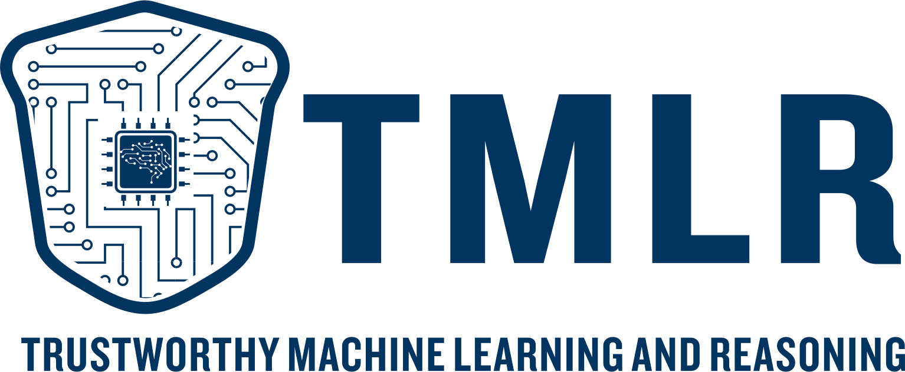

|  |
Trustworthy Machine Learning Research
Trustworthy Machine Learning and Reasoning (TMLR) Group, an online-offline-mixed machine learning research group, locates in different cities, including Hong Kong SAR, Melbourne and Shanghai. We share the vision for the future ML technology: building trustworthy learning and reasoning algorithms, theories and systems.
|